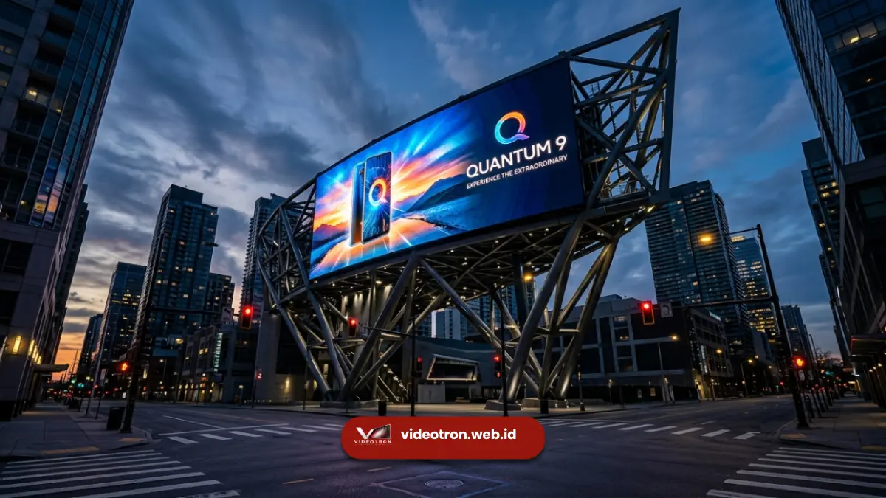

Temukan pengertian videotron, jenis indoor & outdoor, serta fungsi utamanya untuk bisnis Anda. Optimalkan branding visual Anda bersama Tim Ahli Videotron.web.id.
Apa Itu Videotron?
Videotron adalah sebuah media elektronik berbentuk layar raksasa yang memanfaatkan teknologi Light Emitting Diode (LED) untuk menampilkan video, gambar, teks, maupun konten visual dinamis lainnya.
Berbeda dengan papan reklame konvensional yang bersifat statis, videotron menawarkan fleksibilitas konten tinggi, tingkat kecerahan luar biasa, dan efisiensi energi yang memungkinkannya beroperasi 24 jam penuh baik di dalam ruangan maupun di luar ruangan untuk berbagai kebutuhan bisnis dan komunikasi publik.
Penggunaan media digital dinamis kini menjadi kebutuhan mutlak bagi bisnis yang ingin menarik perhatian audiens secara instan di tengah padatnya lalu lintas informasi.
Di sinilah teknologi layar besar berbasis LED memainkan perannya. Di Indonesia, teknologi ini lebih dikenal dengan istilah videotron, sementara di kancah internasional sering disebut sebagai LED display atau digital billboard.
Jenis-Jenis Videotron Berdasarkan Area Pemasangan
Sebelum Anda memutuskan untuk membeli atau menyewa layar visual raksasa ini, sangat penting untuk memahami dua kategori utama yang tersedia di pasar saat ini.
Perbedaan penempatan menentukan komponen sasis, ketahanan panel, serta perlindungan kelistrikan yang disematkan.
1. Videotron Indoor (Dalam Ruangan)
Untuk penggunaan di dalam ruangan, Anda dapat melihat pilihan lengkap pada halaman produk videotron indoor kami. Layar tipe indoor biasanya menggunakan pixel pitch yang sangat rapat (fine pitch seperti P1.5 hingga P2.5) karena jarak pandang penonton yang sangat dekat.
Layar ini tidak dibekali proteksi cuaca ekstrem hujan, namun menawarkan kontras warna yang luar biasa tajam dan nyaman dipandang berlama-lama tanpa membuat mata cepat lelah.
2. Videotron Outdoor (Luar Ruangan)
Sementara itu, untuk keperluan luar ruangan, silakan kunjungi layar videotron outdoor kami untuk melihat spesifikasi fisik panel kabinet luar ruangan yang kokoh.
Layar luar ruangan dituntut memiliki ketahanan tinggi terhadap paparan cuaca ekstrem, panas matahari, dan air hujan deras (menggunakan standar IP65).
Selain itu, tingkat kecerahan visualnya (brightness) mencapai ribuan nits agar konten visual tetap terlihat jelas dan kontras meski terpapar sinar matahari langsung di siang hari.

Videotron outdoor digital billboard di area komersial perkotaan dengan visibilitas prima siang dan malam.Perbandingan Teknis: Indoor vs Outdoor
Untuk memudahkan Anda membandingkan spesifikasi antara kedua jenis layar LED tersebut, berikut rangkuman tabel perbandingan teknis videotron indoor vs outdoor:
| Parameter Teknis | Videotron Indoor | Videotron Outdoor |
|---|---|---|
| IP Rating (Proteksi) | IP30 - IP43 (Tidak tahan air, perlindungan debu standar) | IP65 (Tahan air hujan dari segala arah, kedap debu jalanan) |
| Kecerahan (Brightness) | 600 - 1.200 nits (Nyaman di mata untuk pencahayaan ruangan) | 5.000 - 7.500 nits (Sangat terang, melawan terik sinar matahari) |
| Jarak Pandang Ideal | Dekat (1.5 - 4 meter, kerapatan pixel pitch kecil P1.5 - P2.5) | Jauh (≥ 4 meter, kerapatan pixel pitch lebih renggang P3.9 - P10) |
| Sasis / Kabinet | Ringan, tipis, desain modular seamless | Kokoh, berat, dilengkapi sasis proteksi cuaca ekstrem |
Penerapan Videotron untuk Optimalisasi Bisnis
Pemanfaatan layar LED raksasa tidak lagi terbatas sebagai media iklan jalanan. Kini, korporasi memanfaatkan teknologi visual ini untuk berbagai kebutuhan komunikasi internal maupun eksternal. Beberapa penggunaan populer meliputi:
- Ruang Rapat & Boardroom: Menggantikan proyektor buram di boardroom perusahaan untuk menyajikan grafik data bisnis resolusi tinggi.
- Latar Belakang Panggung Event: Menampilkan tayangan panggung dinamis, video pengantar, dan dekorasi panggung digital di acara pernikahan atau seminar.
- Etalase Ritel Modern: Menarik perhatian pelanggan dengan konten promosi visual interaktif langsung di kaca depan toko.
Bagi Anda yang sedang merencanakan acara seminar perusahaan, konser musik, atau peluncuran produk dalam waktu dekat.
Anda dapat meninjau ketersediaan perangkat terbaik pada menu paket sewa videotron kami yang menawarkan solusi rental lengkap termasuk instalasi sasis panggung, operator profesional, dan jaminan kelancaran visual sepanjang event berlangsung.
Kesimpulan & Rekomendasi Solusi
Videotron merupakan investasi visual bernilai tinggi yang sanggup mentransformasi citra profesional bisnis Anda secara signifikan. Pemilihan antara modul indoor ataupun outdoor harus didasarkan pada analisis lokasi, pencahayaan sekitar, jarak pandang audiens, dan tujuan pesan yang ingin disampaikan.
Tim ahli Vendor Videotron siap membantu Anda mulai dari tahap konsultasi spesifikasi, perencanaan desain struktural, penyewaan untuk acara khusus, hingga instalasi permanen dengan garansi purnajual resmi.

Hawa Nadira
LED Technology Consultant & Visual Educator
Konsultan dan spesialis solusi display digital berdedikasi tinggi yang fokus membagikan panduan edukatif mengenai penerapan teknologi layar LED videotron untuk kebutuhan interior modern di Indonesia.